※有消息指出2024年5月目前，午餐菜单已不再供应冲绳面，请注意。这本来是我觉得好吃的冲绳面之一，真可惜(;｡;)
2023年10月吃的。这间店是「第13届冲绳面集章活动（2023.10.1〜2024.2.29）」的参加店家，是我去的第8间／34间😊
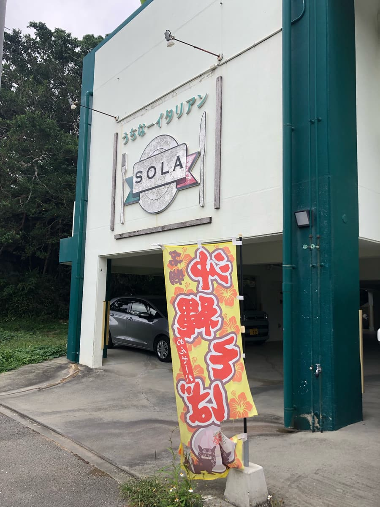
哎呀～笑 这间店，我常常在国道上开车时看到，但从没看过中午时段像这样立着冲绳面的旗帜，从店名完全想不到是冲绳面店(;^ω^) 一直以为是一般的义式料理店(;^ω^)
营业时间是12点〜14点30分，好像比较短，所以可能因此才一直没看过冲绳面的旗帜ｗｗ
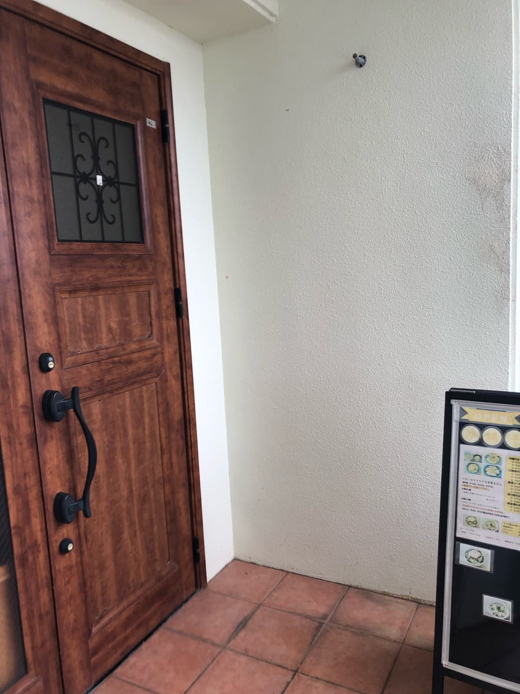
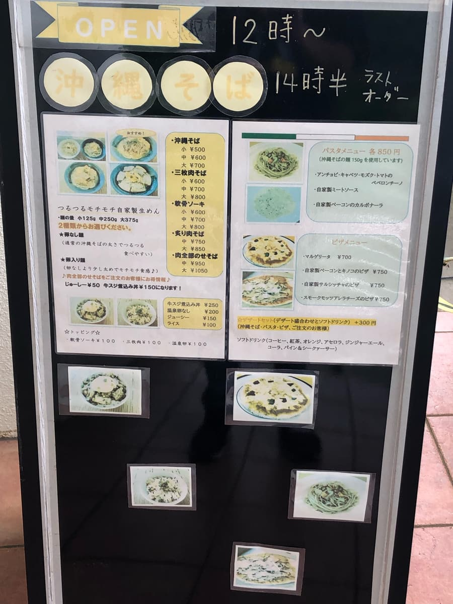
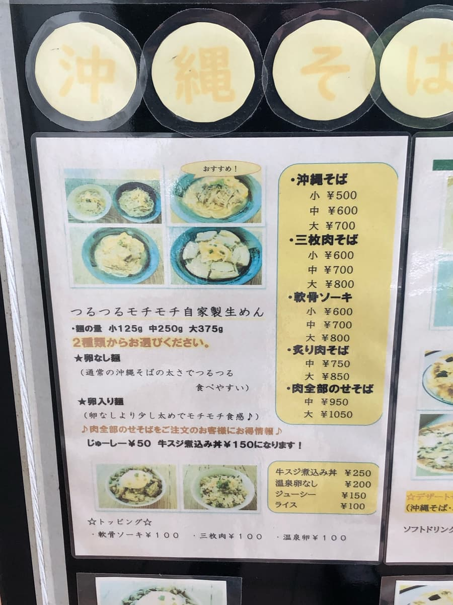
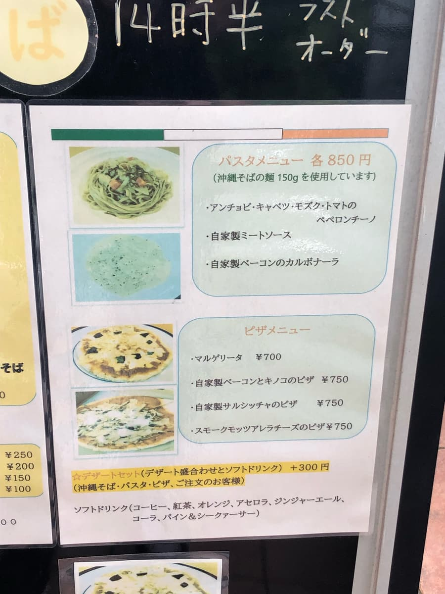
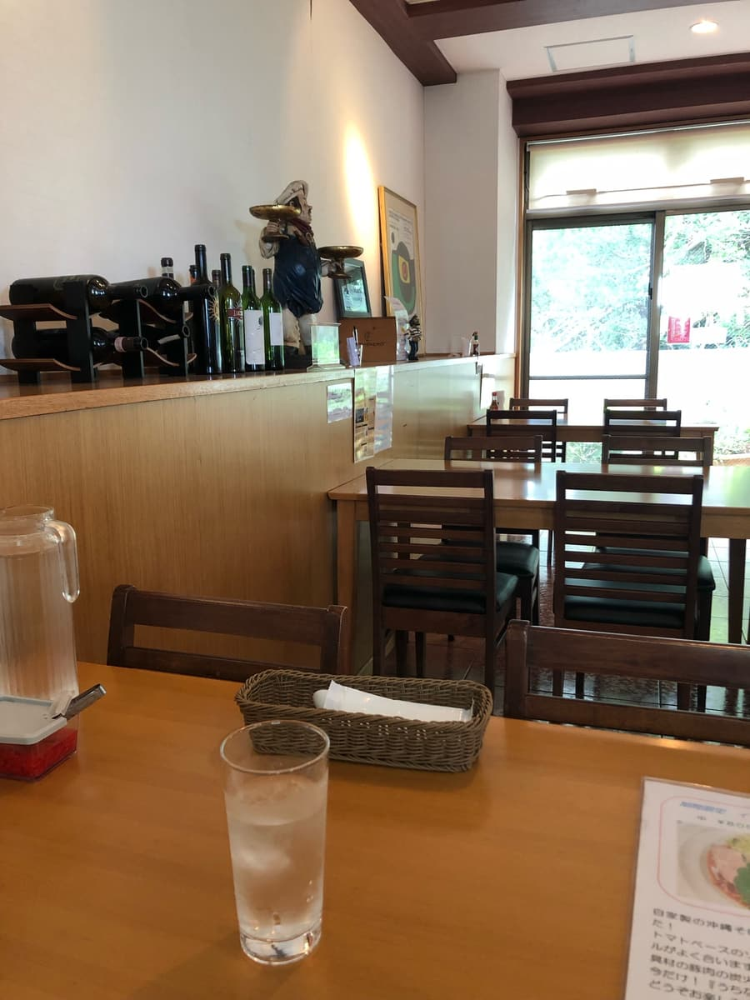
走进店里，就像上面的照片一样，果然是义式风格😁 而且，不知道是义大利面还是披萨用的，店里飘着起司的香味呢🤗
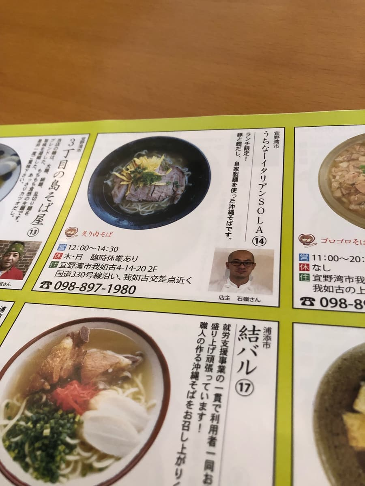
集章活动的手册中介绍了「炙烧肉面」，所以就点了。
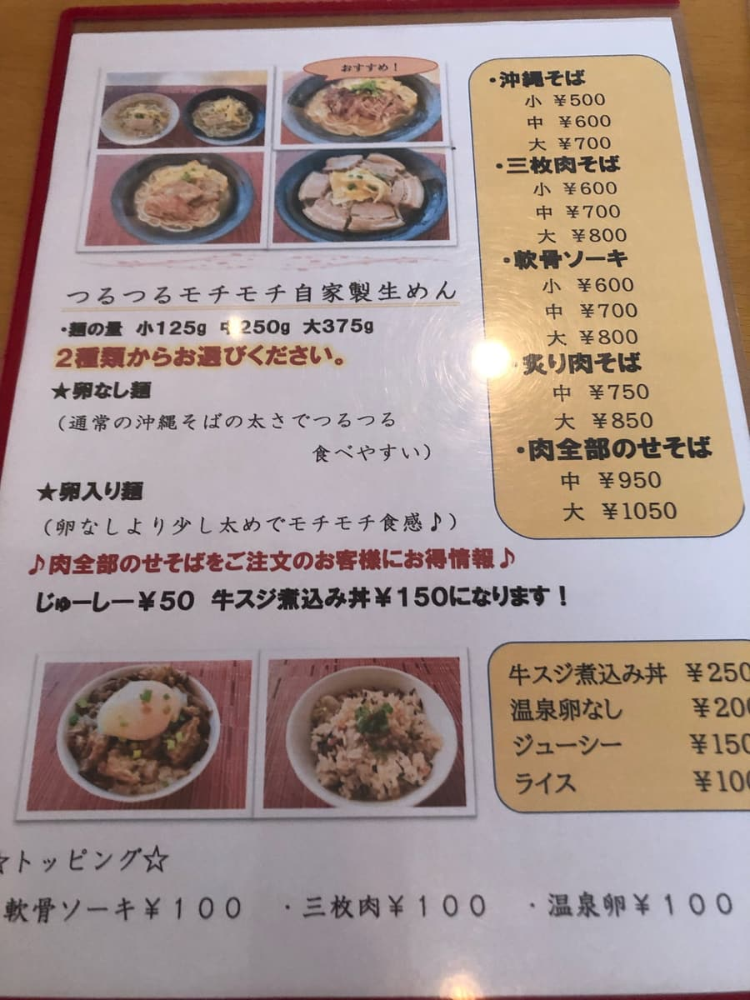
面好像有2种，可以从「无蛋面」「含蛋面」中选择。问了店员推荐哪种，店员说「含蛋面」，所以就选了那个。另外炙烧肉面大碗也只要850日圆，比较划算，所以点了大碗😁 至今吃过的集章活动店家，印象中多是1000日圆左右的价位，这间店大碗850日圆，觉得很划算。
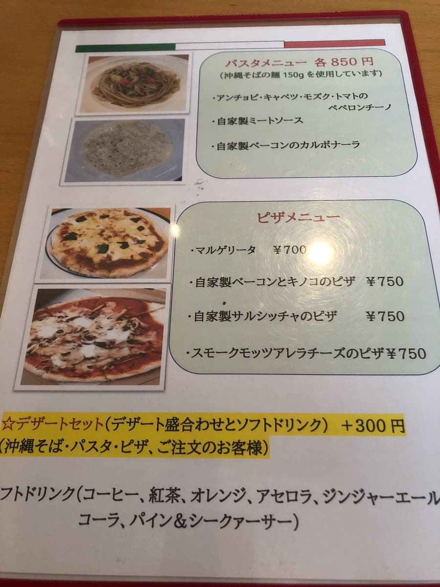
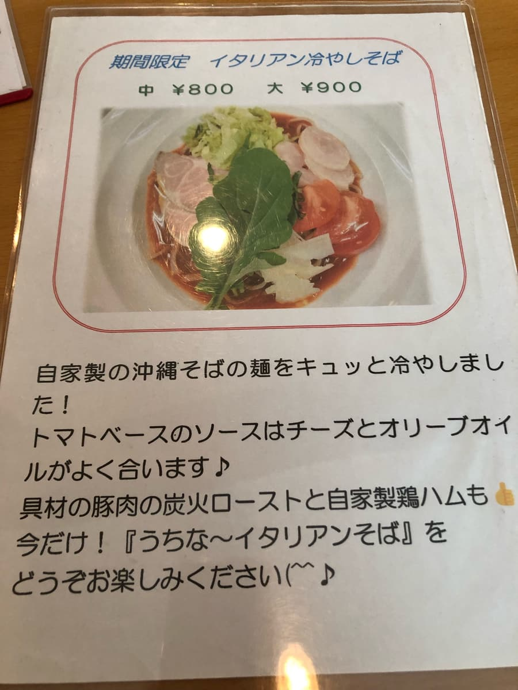
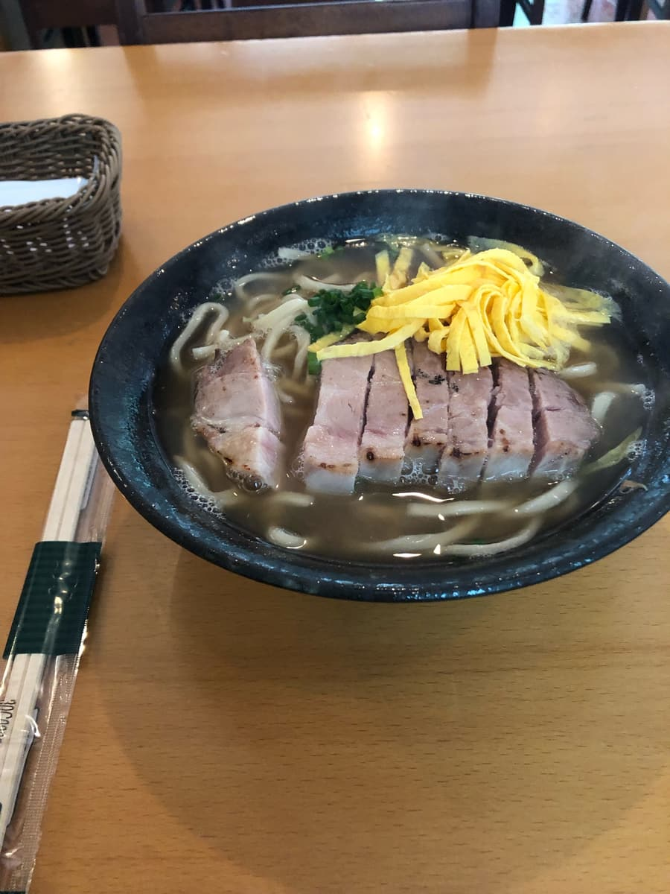
看菜单看得正开心，炙烧肉面就来了ｗｗ 肉的感觉好像是其他店没有的呢。
首先是汤头，集章活动的介绍上写着「猪和柴鱼高汤」，在综合高汤中，柴鱼的味道很明显。好吃😋
接下来吃面😋
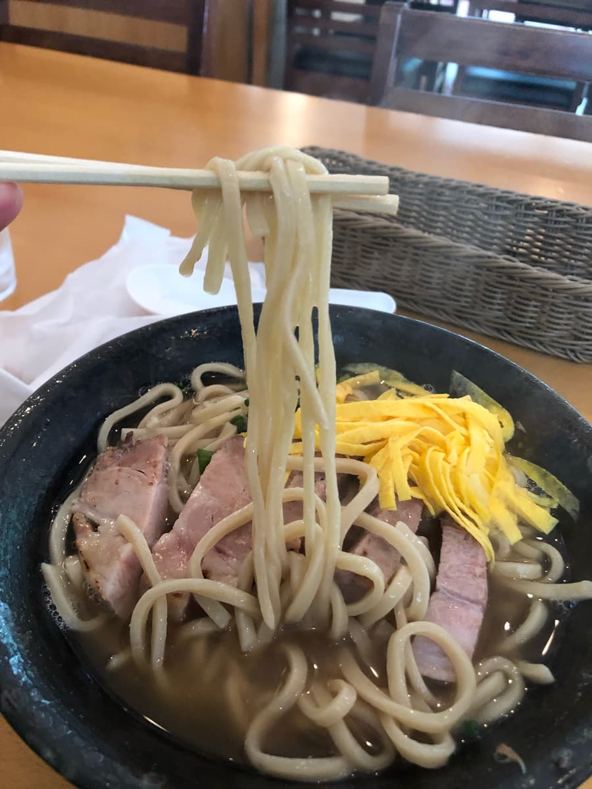
就像菜单上写的，是偏粗的直面。滑溜Q弹的自家制生面也很好吃😋
接下来吃肉。这个配料跟其他店不一样呢，好像是把猪里肌炙烧过，像是厚切的火腿，这个也很新鲜好吃😋。
评分（12分/15分）：我觉得配料、面、汤头水准都很高。特别是滑溜Q弹的自家制生面、像厚切火腿一样的炙烧猪里肌肉很好吃。店内也是义式风格，气氛很好。很希望大家一定要来吃一次，推荐。
面：★★★★☆（4）
汤头：★★★★☆（4）
配料：★★★★☆（4）